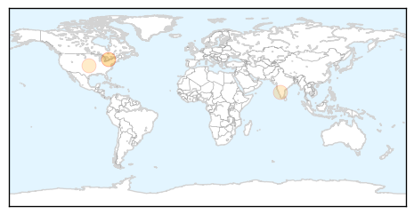
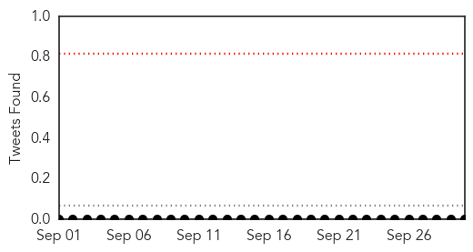

Hepatitis
30-Day Web Trend
1 alerts, 0 warnings

30-Day Twitter Trend
0 alerts, 0 warnings

Article Locations
Article Confidences

Top Articles:
- 0.642
- Public must be informed about disease outbreaks at health clinics
- 0.624
- Amrita Hospital, Kochi flags off medical relief to flood-hit in Kashmir , AniNews.in
- 0.618
- Amrita Hospital, Kochi flags off medical relief to flood-hit in Kashmir
- 0.542
- Experts warn against use of multi-dose vials in wake of hepatitis C outbreak at colonoscopy clinics
Top Tweets:
-
No tweets found for Sep 30, 2014
Meningitis
30-Day Web Trend
5 alerts, 7 warnings

30-Day Twitter Trend
0 alerts, 0 warnings

Article Locations
Article Confidences

Top Articles:
- 0.989
- Enterovirus : More confirmed EV-D68 cases in Westchester, Rockland
- 0.976
- Twenty-five patients tested positive for Enterovirus D68 in Michigan
- 0.968
- CDC Investigates Possible Link Between Enterovirus and Limb Paralysis in Children
- 0.956
- At Least 4 Kids In Boston Being Treated For Illness With Polio-Like Symptoms
- 0.940
- 4 more kids with limb weakness
- 0.611
- Police, EMS workers may have been exposed to meningitis
Top Tweets:
-
No tweets found for Sep 30, 2014